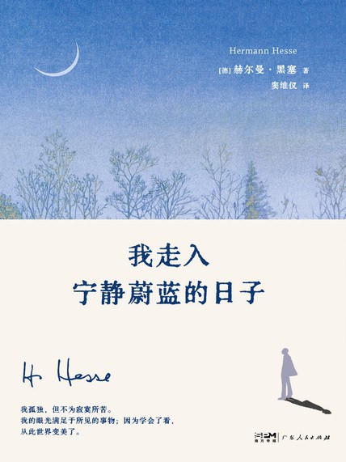
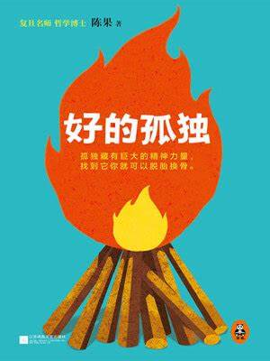
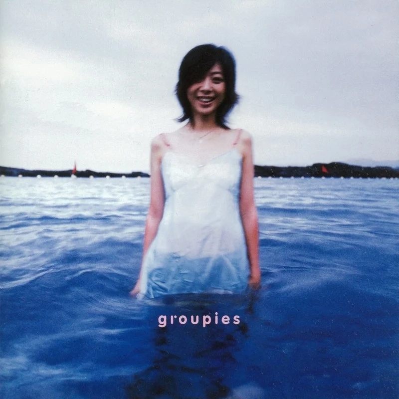
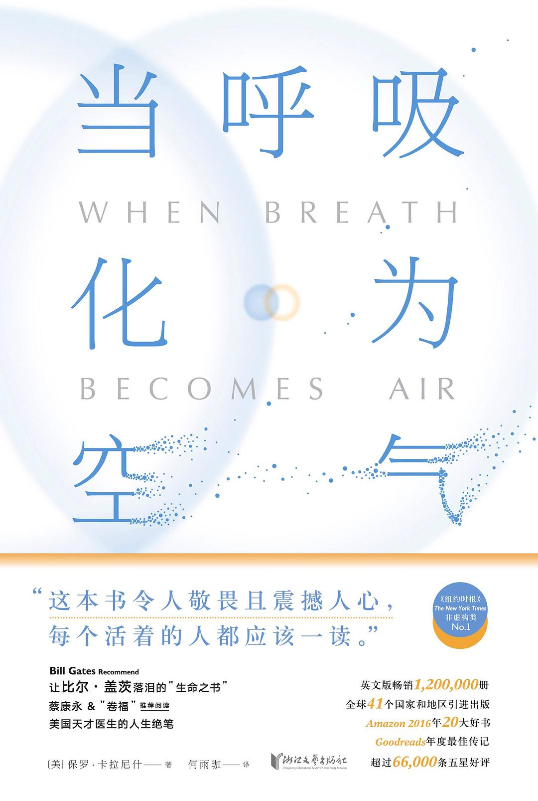
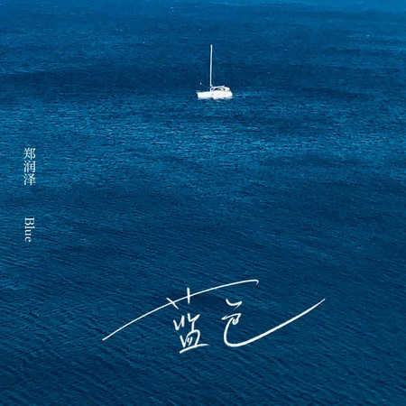
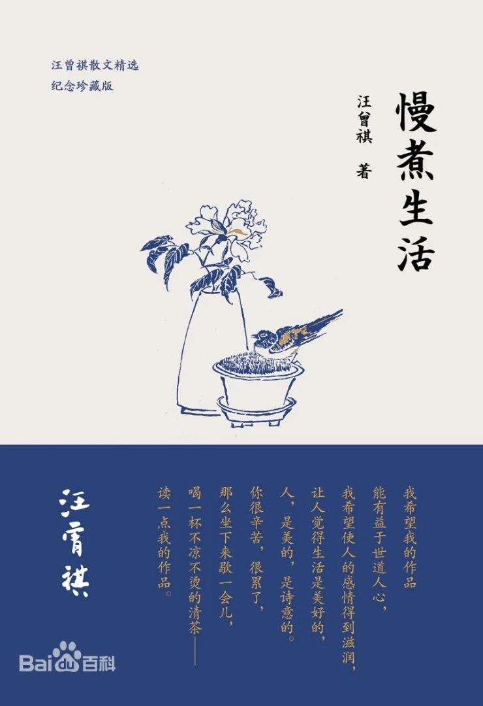
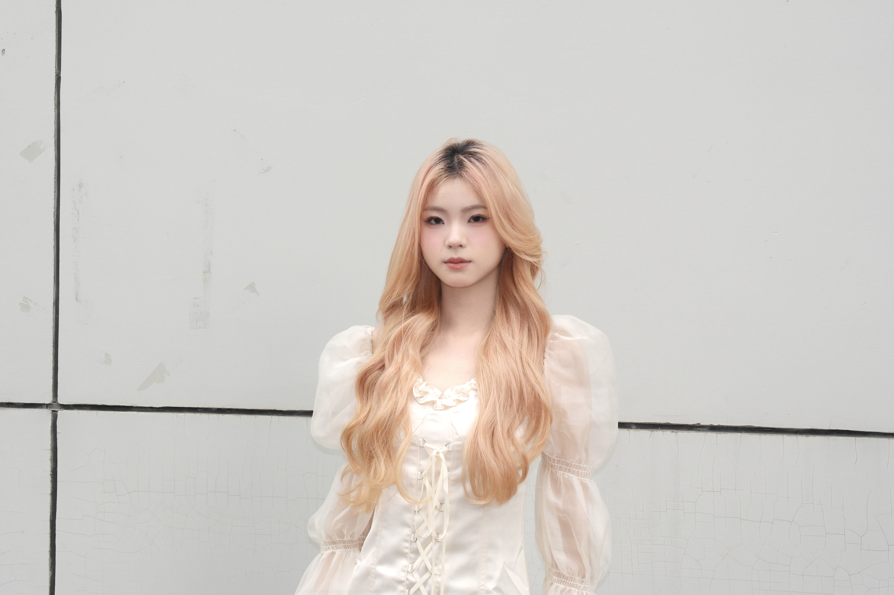
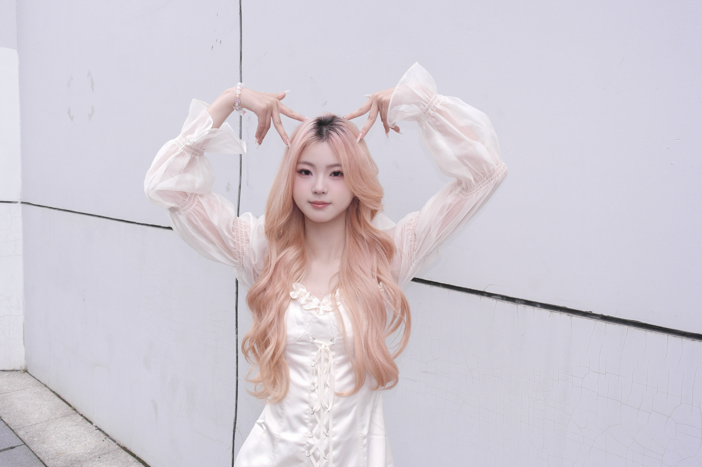

对我来说，在学习之外的休闲时光里，适当的运动也可以帮我缓解压力，放松身心。而跳舞是我最喜欢的运动。当我全心全意跳舞时我也可以与喧嚣的外部世界短暂的隔离。在这段时间里，我们可以拥有属于自己与自己肢体的时间，通过舞蹈与自己对话。
| 舞蹈类型 |
擅长的类型：爵士、Kpop 想尝试的类型：Urban、Wrecking |
|---|---|
| 舞龄 | 1年10个月 |
| 表演经验 |
送毕晚会、路演 民舞大赛 |
| 体会与感悟 | 在跳舞的时候，可以感受到自己是在做自己热爱的事情， 虽然大汗淋漓，却丝毫感觉不到疲惫；在舞室还可以和一群志同道合的朋友们一起聊天， 也是很开心愉悦的。 |
对我来说，在学习之外的休闲时光里，多听音乐可以帮我缓解压力，放松身心。我们可以通过耳机，与喧嚣的外部世界短暂的隔离。在这段时间里，我们可以拥有属于自己的时间，属于自己的一方天地，疗愈和治愈自己。
| 音乐推荐 | 《开始懂了》、《半句再见》、《尚好的青春》 |
|---|---|
| 歌手 | 孙燕姿、陈绮贞、郑润泽 |
| 喜欢的歌词 |
“有昨天还是好的，但明天是自己的，开始懂了，快乐是选择。” “一端在彼，一段在天，两端连成直线。 “直线，画不出个圆。” “就算给你的爱，石沉大海；青春飞逝就在，找不回来。” |
| 体会和感悟 | 快乐是我们自己面对生活的选择，开心的过一天和不开心的过一天，都是经历了一天，我们大可以选择忽视和忘记昨天悲伤的事情，快乐的去迎接明天，开心的过好明天。 |
对我来说，在专业课的学习之余，多多阅读自己感兴趣的课外书籍，可以拓宽自己的视野， 丰富自己的思想。适当的了解本专业以外的专业知识，可以增强自己对本专业用途的理解; 适当阅读文学作品，可以提升自己对社会、外部世界的理解和认知。
| 书籍推荐 | 《我走入宁静蔚蓝的日子》 |
|---|---|
| 作者 | 赫尔曼・黑塞 |
| 内容梗概 | 《我走入宁静蔚蓝的日子》是赫尔曼・黑塞在隐居瑞士提契诺州小山村期间创作的随笔诗歌作品集，记录了他在自然中自我疗愈的历程 |
| 体会和感悟 | 品读《我走入宁静蔚蓝的日子》，感悟自然对心灵的强大疗愈力，黑塞在山水草木间抚平创伤，让我们看到自然是对抗精神困境的良药；体会孤独的双重性，独处并非寂寞，而是通往自由与自我认知的路径；同时明白生活之美藏于平凡瞬间，应珍视细微美好，借观察自然与艺术创作，完成内心探索与精神成长。 |
| 好句 |
“我的眼睛饥渴地啜饮那纯净的蓝颜色。” “我孤独，但不为寂寞所苦。我的眼光满足于所见的事物，因为学会了看，从此世界变美了。” “所有的极端与对立都告消失之处，即是涅槃。我所向往、渴慕的那颗星，依然在我心中熠熠闪烁。” “我图画中最明亮的橘黄色 —— 那是肥美多汁的无花果树的颜色，是阳光投射在山墙上的颜色。” “假日或夜晚时，玩波西卡球，与和善的村民啜饮农人自酿的葡萄酒，吃面包，谈天说地，我度过了温暖、宁静、肃穆的傍晚，日子充满了夏日的芳香、哀伤、孤寂、哲思与童稚。” |
对我来说，写字是抒发个人情绪的重要通道和途径。或许有些时候，面对太多人。我不擅长表达；或许有些话，我说不出口； 又或许想表达的意思，没办法说清楚。但是我可以写下来。我写下自己的情绪，写下自己的内心，写下自己的进步，写下自己的小成功，写下自己的后悔， 写下自己的不安、焦虑、痛苦、悲伤...写下来，记录自己，写给自己，给自己一个自我表达的机会，不需要有压力的表达，不需要担心是否说错话， 也不需要担心是否倾听者会厌烦。
| 日记本 | 记录日常发生的点点滴滴，记录值得回味的瞬间，记录感激的时刻，记录幸福的时光。 |
|---|---|
| 便利贴 | 记录下偶尔看到的好词好句，记录下别人说的让自己感动的话，记录下突然发生和可能发生的事情，记录下需要注意的日常习惯。 |
| 手机备忘录 | 记录下近期需要完成的任务。记录朋友的生日，写下旅游计划，记录自己的习惯，记录背书的进度。 |
| 读书笔记 | 品读《我走入宁静蔚蓝的日子》，感悟自然对心灵的强大疗愈力，黑塞在山水草木间抚平创伤，让我们看到自然是对抗精神困境的良药；体会孤独的双重性，独处并非寂寞，而是通往自由与自我认知的路径；同时明白生活之美藏于平凡瞬间，应珍视细微美好，借观察自然与艺术创作，完成内心探索与精神成长。 |
| 做自己的诗人 |
“生活中的种种经历都是成长的机遇， 无论痛苦还是快乐，” 都能让我们变得更加成熟和强大” “爱过我的人教会我怎么去爱，也教会我怎么被爱。” “我比自己想象的脆弱，却比别人想象的坚强。” |







